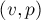
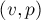
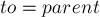
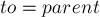

MAXimal
добавлено: 5 Jul 2008 22:26
редактировано: 6 Dec 2012 1:41
Содержание [скрыть]
Поиск точек сочленения
Пусть дан связный неориентированный граф. Точкой сочленения (или точкой артикуляции, англ. "cut vertex" или "articulation point") называется такая вершина, удаление которой делает граф несвязным.
Опишем алгоритм, основанный на поиске в глубину, работающий за  , где
, где  — количество вершин,
— количество вершин,  — рёбер.
— рёбер.
Алгоритм
Запустим обход в глубину из произвольной вершины графа; обозначим её через  . Заметим следующий факт (который несложно доказать):
. Заметим следующий факт (который несложно доказать):
- Пусть мы находимся в обходе в глубину, просматривая сейчас все рёбра из вершины . Тогда, если текущее ребро
 таково, что из вершины
таково, что из вершины  и из любого её потомка в дереве обхода в глубину нет обратного ребра в какого-либо предка вершины
и из любого её потомка в дереве обхода в глубину нет обратного ребра в какого-либо предка вершины  , то вершина является точкой сочленения. В противном случае, т.е. если обход в глубину просмотрел все рёбра из вершины , и не нашёл удовлетворяющего вышеописанным условиям ребра, то вершина не является точкой сочленения. (В самом деле, мы этим условием проверяем, нет ли другого пути из в )
, то вершина является точкой сочленения. В противном случае, т.е. если обход в глубину просмотрел все рёбра из вершины , и не нашёл удовлетворяющего вышеописанным условиям ребра, то вершина не является точкой сочленения. (В самом деле, мы этим условием проверяем, нет ли другого пути из в ) - Рассмотрим теперь оставшийся случай:
 . Тогда эта вершина является точкой сочленения тогда и только тогда, когда эта вершина имеет более одного сына в дереве обхода в глубину. (В самом деле, это означает, что, пройдя из по произвольному ребру, мы не смогли обойти весь граф, откуда сразу следует, что — точка сочленения).
. Тогда эта вершина является точкой сочленения тогда и только тогда, когда эта вершина имеет более одного сына в дереве обхода в глубину. (В самом деле, это означает, что, пройдя из по произвольному ребру, мы не смогли обойти весь граф, откуда сразу следует, что — точка сочленения).
(Ср. формулировку этого критерия с формулировкой критерия для алгоритма поиска мостов.)
Теперь осталось научиться проверять этот факт для каждой вершины эффективно. Для этого воспользуемся "временами входа в вершину", вычисляемыми алгоритмом поиска в глубину.
Итак, пусть ![tin[v]](../tex2png/cache/2d830e71aff0814b8aa3d42124ec9dfb.png) — это время захода поиска в глубину в вершину . Теперь введём массив
— это время захода поиска в глубину в вершину . Теперь введём массив ![fup[v]](../tex2png/cache/c747353f9543d5d792489fcee7ff737d.png) , который и позволит нам отвечать на вышеописанные запросы. Время равно минимуму из времени захода в саму вершину , времён захода в каждую вершину
, который и позволит нам отвечать на вышеописанные запросы. Время равно минимуму из времени захода в саму вершину , времён захода в каждую вершину  , являющуюся концом некоторого обратного ребра , а также из всех значений
, являющуюся концом некоторого обратного ребра , а также из всех значений ![fup[to]](../tex2png/cache/a34ea9edd56d195a7dbdc722d58b8ca0.png) для каждой вершины , являющейся непосредственным сыном в дереве поиска:
для каждой вершины , являющейся непосредственным сыном в дереве поиска:
![fup[v] = \min \cases{
tin[v], & \cr
tin[p], & {[...]](../tex2png/cache/ec0a7c417df6f6cbc5ef762cd909127f.png)
(здесь "back edge" — обратное ребро, "tree edge" — ребро дерева)
Тогда, из вершины или её потомка есть обратное ребро в её предка тогда и только тогда, когда найдётся такой сын , что ![fup[to] < tin[v]](../tex2png/cache/4668070cee8195bb489b9cd83880c777.png) .
.
Таким образом, если для текущего ребра (принадлежащего дереву поиска) выполняется , то вершина является точкой сочленения. Для начальной вершины критерий другой: для этой вершины надо посчитать число непосредственных сыновей в дереве обхода в глубину.
Реализация
Если говорить о самой реализации, то здесь нам нужно уметь различать три случая: когда мы идём по ребру дерева поиска в глубину, когда идём по обратному ребру, и когда пытаемся пойти по ребру дерева в обратную сторону. Это, соответственно, случаи ![used[to]=false](../tex2png/cache/03b3b76b6aaa98e192434fcfb43b8fd2.png) , , и . Таким образом, нам надо передавать в функцию поиска в глубину вершину-предка текущей вершины.
, , и . Таким образом, нам надо передавать в функцию поиска в глубину вершину-предка текущей вершины.
vector<int> g[MAXN]; bool used[MAXN]; int timer, tin[MAXN], fup[MAXN]; void dfs (int v, int p = -1) { used[v] = true; tin[v] = fup[v] = timer++; int children = 0; for (size_t i=0; i<g[v].size(); ++i) { int to = g[v][i]; if (to == p) continue; if (used[to]) fup[v] = min (fup[v], tin[to]); else { dfs (to, v); fup[v] = min (fup[v], fup[to]); if (fup[to] >= tin[v] && p != -1) IS_CUTPOINT(v); ++children; } } if (p == -1 && children > 1) IS_CUTPOINT(v); } int main() { int n; ... чтение n и g ... timer = 0; for (int i=0; i<n; ++i) used[i] = false; dfs (0); }
Здесь константе  должно быть задано значение, равное максимально возможному числу вершин во входном графе.
должно быть задано значение, равное максимально возможному числу вершин во входном графе.
Функция в коде — это некая функция, которая будет реагировать на то, что вершина является точкой сочленения, например, выводить эту вершины на экран (надо учитывать, что для одной и той же вершины эта функция может быть вызвана несколько раз).
Задачи в online judges
Список задач, в которых требуется искать точки сочленения: